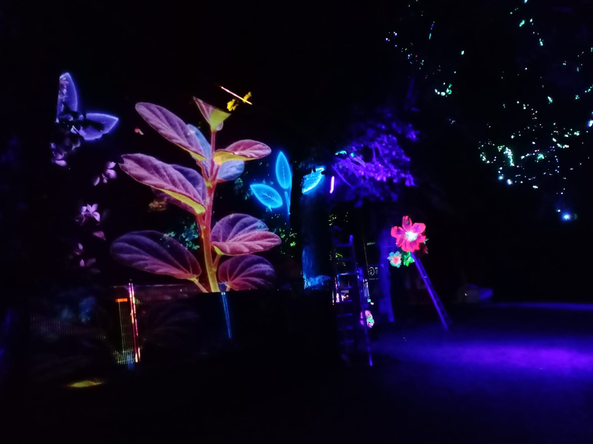
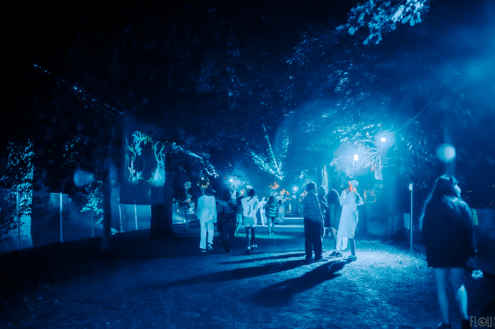
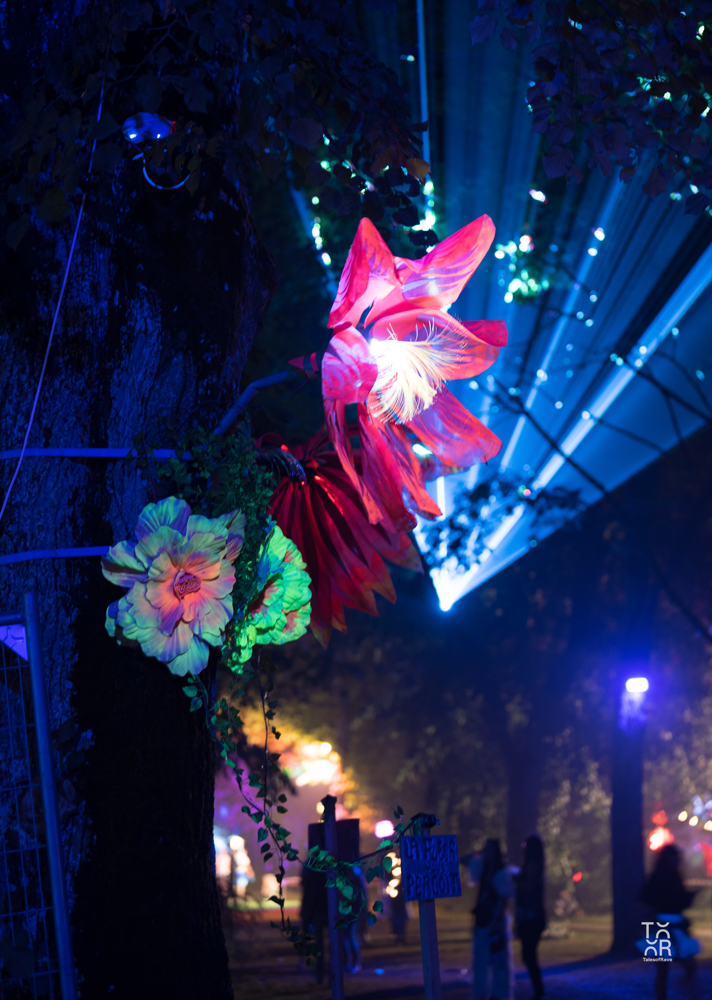
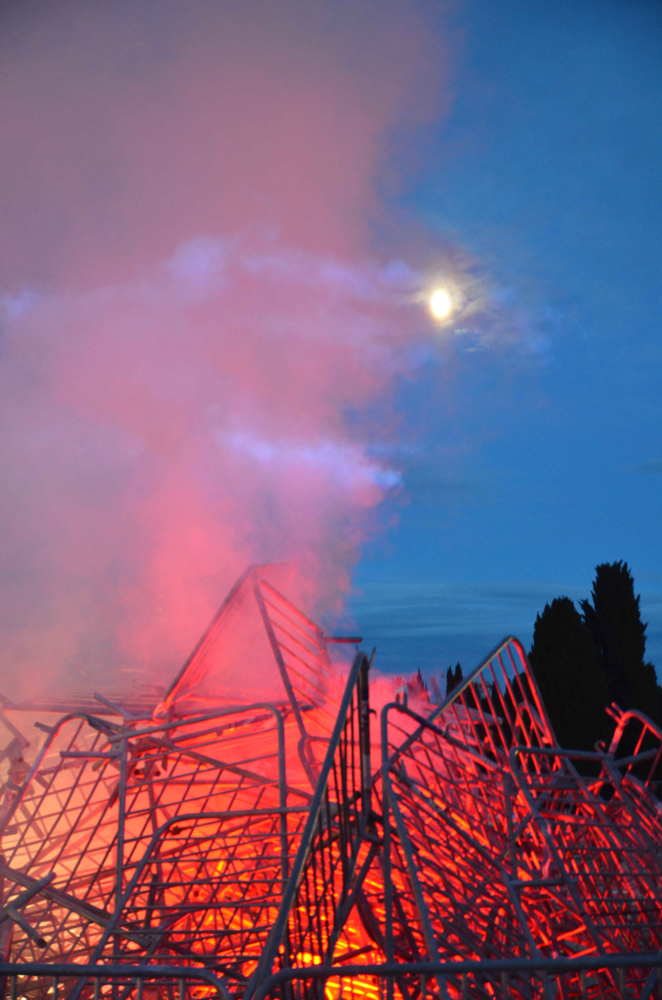
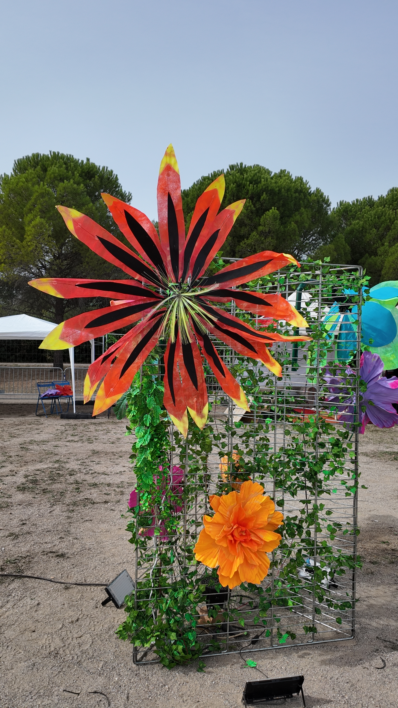

01
Château
Perché
Cypher conçoit et déploie chaque année une allée immersive de 100 mètres pour l'une des scènes du festival Château Perché. L'espace est transformé en parcours sensoriel complet — la fumée, le mapping, les lasers et les installations interactives se répondent pour créer une déambulation unique.
Les Fleurs Timides sont installées dans les arbres le long du parcours. Des toiles tendues entre les branches reçoivent des projections synchronisées en NDI. La muraille historique est mise en lumière par des projecteurs DMX.
5 vidéoprojecteurs NDI synchronisés — mapping holographique sur toiles tendues
Lasers DMX — faisceaux en surplomb de l'allée, automatisés sur la musique
Machines à fumée — nappes basses et colonnes en contre-jour laser
Fleurs Timides — jardin robotique UV intégré aux arbres du parcours
LVX-1 — installation interactive IA en point focal de l'allée
Machine à bulles — bulles géantes en fin de parcours





Espace
Allée de 100 m
Projections
5 vidéoprojecteurs NDI
Installations
LVX-1 + 12 Fleurs
Éditions
2024 & 2025